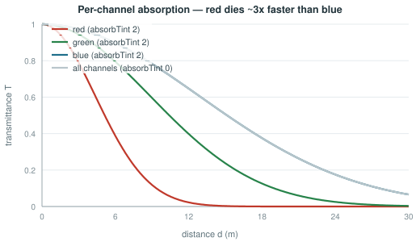

We built this to prevent one failure mode: objects looking pasted onto a background. It happened to us when a rock's shader and the sky's shader disagreed slightly about the colour of distance — the rock stayed a little too crisp, or faded to a slightly different blue, and the eye immediately read it as a sticker rather than as something in the water.
So we define the water once — a handful of colours and two distances — and push it out as global values that every shader reads. We left no per-material fog setting that could drift out of sync. When a teacher picks "Coastal Green", our sand, boulders, kelp, marine snow, water surface and horizon all change together, because they are all reading the same numbers.
The most important single thing we did to make the medium read as water rather than as fog was to model the fact that water absorbs different wavelengths at very different rates. Red light is gone within a few metres; blue carries much further. This is why underwater photographs go blue-green with depth and distance, and it is why the grey haze we started with never looked wet.
Rather than ask anyone to author three extinction coefficients, we derive them from the water colour the user already chose: we absorb the channels in which the water is dark harder. A single authored colour therefore gives us physically-flavoured wavelength-dependent attenuation for free. We also made the effect's strength zero reproduce our older single-channel behaviour exactly, which is what let us introduce it without changing existing environments.

Our infinite streamed world has a boundary: the last ring of chunks, beyond which nothing exists yet. If the student can see that far, they see our world end.
The usual approach is to tune the fog until the edge is hidden, and to re-tune it whenever the view distance changes. For us that was a maintenance burden and a latent bug — a teacher who picked a large exploration area and high visibility would have brought the edge straight back.
Instead we coupled the two by a rule: we force the distance at which visibility reaches zero to be less than the streaming reach, with a margin. We do not recommend it as a setting — we re-derive it every time an environment is loaded or saved, so no combination of choices can violate it, and neither can editing the file directly. For us "the world never visibly ends" stopped being a tuning outcome and became a property we hold by construction.
We applied the same reasoning to tie the camera's far clipping plane to that distance — there is no reason for us to draw what is fully fogged — and to tie our marine-snow volume to it, since particles must not appear beyond the point where the water is already opaque.
Fogging the far plane to hide a streaming boundary is as old as streaming worlds, and we did not invent it. What we have not seen elsewhere, and what we are claiming, is treating that relationship as a machine-enforced invariant across two independent subsystems, re-derived on every load and save, so that no reachable configuration can expose the boundary.
We think it is the clearest single example of our general idea in §8: subsystems that must agree should be made to agree by construction, not by documentation and care. It is small, it is checkable, and we believe it generalises well beyond our application.
Three techniques do a disproportionate amount of the work of making our scene feel underwater, and we chose all three for cost as much as for appearance:
We want to mention a fourth as a correctness note rather than an effect. We sway kelp in the vertex shader, weighted so roots stay planted, and we derive the phase from world position so a whole bed moves as one current field rather than in unison. We duplicate the sway maths exactly in the depth pass — a classic source of bugs, since a plant that bends in colour but not in depth self-occludes wrongly.
We take no credit for the physics: wavelength-dependent underwater attenuation is standard in offline and film rendering and appears in high-end real-time water. Our contribution is deriving it automatically from the single colour a non-expert already chose, so our author never sees an extinction coefficient. That is what made the feature acceptable to us under constraint C4.
This is the part of our system we would build a paper around. Everything before it is our competent assembly of known technique in service of a hard set of constraints. This section is where we think we have an idea.
Our obvious first response to constraint C4 was to expose a subset of the technical parameters: hide lacunarity, keep fog density. It did not work, for two reasons.
First, the parameters we kept were still meaningless to our user. "Fog density 0.055" is not a question a marine biology teacher has an opinion about. What they have an opinion about is whether the water is murky or clear.
Second, and more seriously: we found that individually valid settings still combine into a broken world. Every parameter can sit inside its own legal range while the environment is unusable — terrain tall enough to erupt through the water surface, or visibility long enough to see the world end. We could not fix that by restricting ranges, because the problem is not in any one range. It is in the relationships between them.
We therefore built two distinct layers with a single translation between them.
The mapper is where we put our domain knowledge. Each seafloor profile is a recipe we tuned by hand, and critically one choice drives several correlated parameters at once. Our water clarity control does not just set fog density; it also sets how hard colour is absorbed, how much suspended particulate there is, and how much light survives — because in real water those covary. We never give the user three sliders that they could set into a physically incoherent combination.
After every derivation we re-compute six relationships rather than trust them:
| The invariant | What it prevents | |
|---|---|---|
| I-1 | Fog must have a real fade band | A hard visibility wall instead of a gradual fade |
| I-2 | Visibility must end before the streaming reach | Seeing the edge of the world |
| I-3 | Terrain peaks stay below the water surface | Seabed erupting through the surface into open air |
| I-4 | One water level drives the plane, the fog and the shaders | The visual surface and the physical surface disagreeing |
| I-5 | The camera's far plane is derived from visibility | Drawing geometry that is already fully fogged |
| I-6 | A hard per-chunk budget on scattered objects | A dense-habitat choice producing a frame-rate collapse |
Two details make what we did stronger than validation:
We run the invariants on save as well as load. We clamp a hand-edited file, a file from an older version, or a file transferred between devices on the way in. We left no trusted path into the system.
We generate the user interface from the same range definitions that our clamp enforces. The form literally cannot express an out-of-range value, so our clamp is a second line of defence rather than the only one — and the two cannot drift apart, because we wrote only one definition.
This is our strongest claim, and the one we would put in an abstract.
Procedural content tools for non-experts normally reduce risk by restricting ranges — the user gets a slider from 0 to 1 and whatever it produces is deemed acceptable. We found that approach cannot address failures arising from relationships between parameters, and in an integrated real-time system that is where the serious failures live: rendering settings that expose our streaming boundary, terrain settings that violate our water plane, density settings that break our frame budget.
We make a narrow and checkable claim: in our system, no reachable configuration produces a world that is visually broken, physically inconsistent, or outside the performance budget — where "reachable" includes hand-edited configuration files, not just our user interface. Our mechanism is a small set of invariants that span subsystem boundaries, re-derived at both ends of persistence.
We can also demonstrate it cheaply: enumerate the authoring space, assert the invariants hold at every point. We think that is a stronger and more interesting evaluation than a usability score, and it is the experiment we would run first.
One further correctness property we needed is about sequence rather than values. We must configure the terrain generator before the streamer starts, because chunks read their parameters as we create them — a chunk built one frame early would keep default settings for its whole life. The same applies to our materials: we must swap them before any chunk or the water surface is built.
Rather than document this ordering and hope, we do all configuration in exactly one place, in one fixed order, once, at load. After that moment our environment behaves exactly like a hand-authored scene with no ongoing cost. Concentrating our entire configuration surface into a single ordered function is what lets us check the ordering constraint by reading one screen of code.